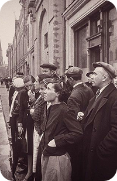
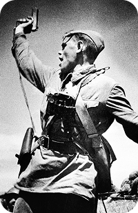
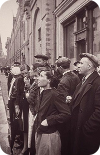
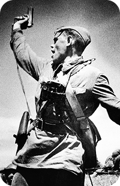

Великая Отечественная война - одно из
ключевых событий в истории России. Экспозиция
ВОВ в нашем музее постоянно обновляется и на
данный момент у нас более 350 экспонатов по
этой теме: боевые снаряды, письма треугольники,
снаряжение солдат, медали и т.д.
Вот самые интересные из них:
Ретранслятор “Рекорд” реплика
Боевые снаряды.
Георои Брянского
края
Экипировка гв. старшего сержанта РККА участника ВОВ
Снаряжение солдата РККА. Красноармейская книжка Письмо треугольник Самоделиная ложка Пуговицы шинели Двугорлая масленка Револьвер
РККА - Рабоче-крестьянская Красная армия
официальное наименование вооружённых сил
РСФСР с 1918 по 1922 год и вооружённых сил СССР
(сухопутных войск и ВВС) с 1922 по 1946 год.